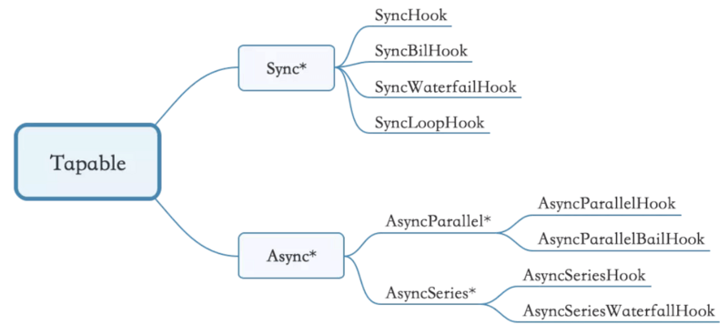

简介
现在前端开发基本上都会用到react、vue，用到了前端mvc、mvvm框架，基本上都会涉及到打包发布，打包常用的工具就是webpack、gulp等等。经常使用自然也要了解一些他大致的流程也会方便使用。
首先要理解 webpack 中比较核心的概念：
- Entry: 指定 webpack 开始构建的入口模块，从该模块开始构建并计算出直接或间接依赖的模块或者库。
- Output：告诉 webpack 如何命名输出的文件以及输出的目录
- Module: 模块，在 Webpack 里一切皆模块，一个模块对应着一个文件。Webpack 会从配置的 Entry 开始递归找出所有依赖的模块。
- Chunk：
coding split的产物，我们可以对一些代码打包成一个单独的chunk，比如某些公共模块，去重，更好的利用缓存。或者按需加载某些功能模块，优化加载时间。在webpack3及以前我们都利用CommonsChunkPlugin将一些公共代码分割成一个chunk，实现单独加载。在webpack4中CommonsChunkPlugin被废弃，使用SplitChunksPlugin - Loader：模块转换器，用于把模块原内容按照需求转换成新内容。
- Plugin：扩展插件，在 Webpack 构建流程中的特定时机会广播出对应的事件，插件可以监听这些事件的发生，在特定时机做对应的事情。
webpack 执行流程和事件流如下图所示：

webpack编译过程中一个比较重要的概念compiler、compilation，如下：
- Compiler 对象：负责文件监听和启动编译。
Compiler实例中包含了完整的webpack配置，全局只有一个Compiler实例。 - Compilation 对象：当
webpack以开发模式运行时，每当检测到文件变化，一次新的Compilation将被创建。一个Compilation对象包含了当前的模块资源、编译生成资源、变化的文件等。Compilation对象也提供了很多事件回调供插件做扩展。
webpack 流程
Webpack 的运行流程是一个串行的过程，从启动到结束依次执行以下流程：
初始化：启动构建，读取与合并配置参数，加载 Plugin，实例化 Compiler。编译：从 Entry 发出，针对每个 Module 串行调用对应的 Loader 去翻译文件内容，再找到该 Module 依赖的 Module，递归地进行编译处理。输出：对编译后的 Module 组合成 Chunk，把 Chunk 转换成文件，输出到文件系统。
如果只执行一次构建，以上阶段将会按照顺序各执行一次。但在开启监听模式下，流程将变为如下：
下面具体介绍一下 webpack的三个大阶段具体的小步。
初始化阶段
初始化阶段大致分为：
- 合并
shell和配置文件文件的参数并且实例化 Complier 对象。 - 加载插件
- 处理入口
| 事件名 | 解释 |
|---|---|
| 初始化参数 | 从配置文件和 Shell 语句中读取与合并参数，得出最终的参数。 这个过程中还会执行配置文件中的插件实例化语句 new Plugin()。 |
| 实例化 Compiler | 用上一步得到的参数初始化 Compiler 实例，Compiler 负责文件监听和启动编译。Compiler 实例中包含了完整的 Webpack 配置，全局只有一个 Compiler 实例。 |
| 加载插件 | 依次调用插件的 apply 方法，让插件可以监听后续的所有事件节点。同时给插件传入 compiler 实例的引用，以方便插件通过 compiler 调用 Webpack 提供的 API。 |
| environment | 开始应用 Node.js 风格的文件系统到 compiler 对象，以方便后续的文件寻找和读取。 |
| entry-option | 读取配置的 Entrys，为每个 Entry 实例化一个对应的 EntryPlugin，为后面该 Entry 的递归解析工作做准备。 |
| after-plugins | 调用完所有内置的和配置的插件的 apply 方法。 |
| after-resolvers | 根据配置初始化完 resolver，resolver 负责在文件系统中寻找指定路径的文件。 |
编译阶段
| 事件名 | 解释 |
|---|---|
| before-run | 清除缓存 |
| run | 启动一次新的编译。 |
| watch-run | 和 run 类似，区别在于它是在监听模式下启动的编译，在这个事件中可以获取到是哪些文件发生了变化导致重新启动一次新的编译。 |
| compile | 该事件是为了告诉插件一次新的编译将要启动，同时会给插件带上 compiler 对象。 |
| compilation | 当 Webpack 以开发模式运行时，每当检测到文件变化，一次新的 Compilation 将被创建。一个 Compilation 对象包含了当前的模块资源、编译生成资源、变化的文件等。Compilation 对象也提供了很多事件回调供插件做扩展。 |
| make | 一个新的 Compilation 创建完毕，即将从 Entry 开始读取文件，根据文件类型和配置的 Loader 对文件进行编译，编译完后再找出该文件依赖的文件，递归的编译和解析。 |
| after-compile | 一次 Compilation 执行完成。这里会根据编译结果 合并出我们最终生成的文件名和文件内容。 |
| invalid | 当遇到文件不存在、文件编译错误等异常时会触发该事件，该事件不会导致 Webpack 退出。 |
这里主要最重要的就是compilation过程，compilation 实际上就是调用相应的 loader 处理文件生成 chunks并对这些 chunks 做优化的过程。几个关键的事件（Compilation对象this.hooks中）：
| 事件名 | 解释 |
|---|---|
| build-module | 使用对应的 Loader 去转换一个模块。 |
| normal-module-loader | 在用 Loader 对一个模块转换完后，使用 acorn 解析转换后的内容，输出对应的抽象语法树（AST），以方便 Webpack 后面对代码的分析。 |
| program | 从配置的入口模块开始，分析其 AST，当遇到 require 等导入其它模块语句时，便将其加入到依赖的模块列表，同时对新找出的依赖模块递归分析，最终搞清所有模块的依赖关系。 |
| seal | 所有模块及其依赖的模块都通过 Loader 转换完成后，根据依赖关系开始生成 Chunk。 |
输出阶段
| 事件名 | 解释 |
|---|---|
| should-emit | 所有需要输出的文件已经生成好，询问插件哪些文件需要输出，哪些不需要。 |
| emit | 确定好要输出哪些文件后，执行文件输出，可以在这里获取和修改输出内容。 |
| after-emit | 文件输出完毕。 |
| done | 成功完成一次完成的编译和输出流程。 |
| failed | 如果在编译和输出流程中遇到异常导致 Webpack 退出时，就会直接跳转到本步骤，插件可以在本事件中获取到具体的错误原因。 |
Tapable
Webpack可以将其理解是一种基于事件流的编程范例，一个插件合集。而将这些插件控制在webapck事件流上的运行的就是webpack自己写的基础类Tapable。Webpack 的事件流机制应用了观察者模式，和 Node.js 中的 EventEmitter非常相似。
Tapable 有四组成员函数：
- plugin(name:string, handler:function)：允许将一个自定义插件注册到
Tapable实例 的事件中。它的行为和EventEmitter的on()方法相似，用来注册一个处理函数/监听器，来在信号/事件发生时做一些事情。 - apply(…pluginInstances:
(AnyPlugin|function)[])：AnyPlugin应该是一个拥有apply方法的类（也可以是一个对象，但是不常见），或者只是一个包含注册代码的函数。这个方法只调用插件的定义，从而将真正的事件监听器可以注册到Tapable实例的注册列表中。 - applyPlugins*(name:string, …)：
Tapable实例可以通过使用这些函数，在指定的hash下应用所有的插件。这一组方法的行为和EventEmitter的emit()方法相似，使用多种策略细致地控制事件的触发。 - mixin(pt: Object)：一个简单地方法，使用混入而不是继承的方式扩展
Tapable的原型。
上面核心的对象 Compiler、Compilation等都是继承于Tabable类。可以直接在 Compiler 和 Compilation 对象上广播和监听器，方法如下：
1 | /** |
同理，compilation.apply 和 compilation.plugin 使用方法和上面一致。
tapable库暴露了很多 Hook（钩子）类，为插件提供挂载的钩子。
1 | const { |
如下图所示 tapable 上的钩子：

tabable 的提供了两类绑定钩子的方式：
- AsyncHook(异步钩子)： 绑定可以通过
tapAsync或tapPromise（以及tap），执行通过callAsync、promise； - syncHook(钩子)： 绑定可以通过
tap，执行通过call；
具体的用法请看Tapable。
总结
Webpack 的运行流程是一个串行的过程，从启动到结束会依次执行以下流程：
- 初始化参数：从配置文件和 Shell 语句中读取与合并参数，得出最终的参数；
- 开始编译：用上一步得到的参数初始化 Compiler 对象，加载所有配置的插件，执行对象的 run 方法开始执行编译；
- 确定入口：根据配置中的 entry 找出所有的入口文件；
- 编译模块：从入口文件出发，调用所有配置的 Loader 对模块进行翻译，再找出该模块依赖的模块，再递归本步骤直到所有入口依赖的文件都经过了本步骤的处理；
- 完成模块编译：在经过第 4 步使用 Loader 翻译完所有模块后，得到了每个模块被翻译后的最终内容以及它们之间的依赖关系；
- 输出资源：根据入口和模块之间的依赖关系，组装成一个个包含多个模块的 Chunk，再把每个 Chunk 转换成一个单独的文件加入到输出列表，这步是可以修改输出内容的最后机会；
- 输出完成：在确定好输出内容后，根据配置确定输出的路径和文件名，把文件内容写入到文件系统。
同时我们也了解了 webpack 中比较核心的几个概念compiler、compilation、tapable。
参考
webpack 学习笔记（原理，实现 loader 和插件）
webpack 源码分析六：webpack 处理流程分析
Webpack 原理与实践（一）：打包流程